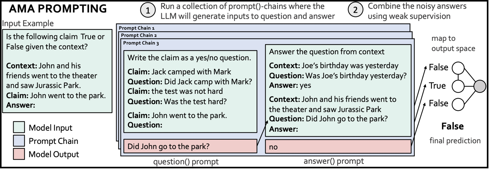
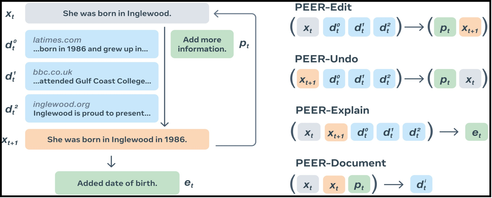
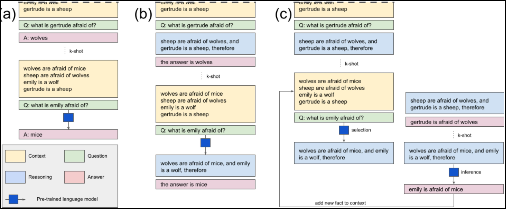
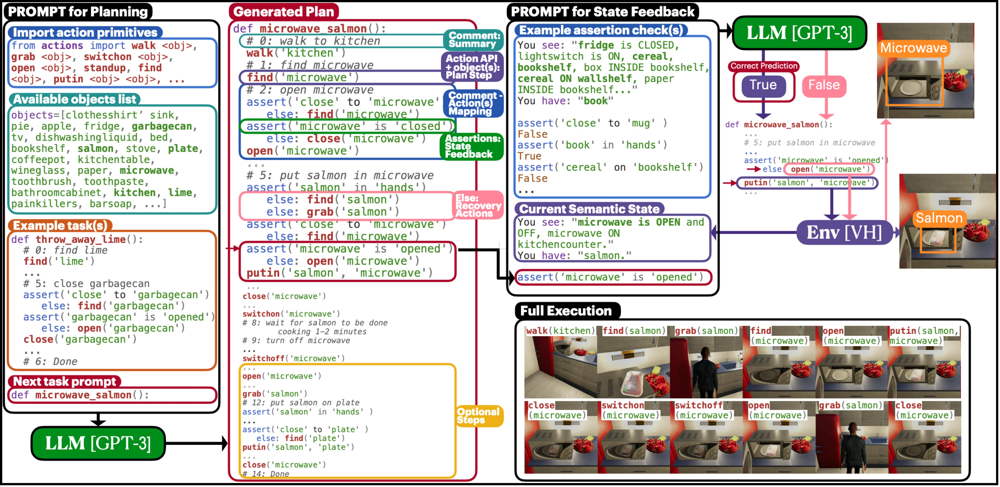
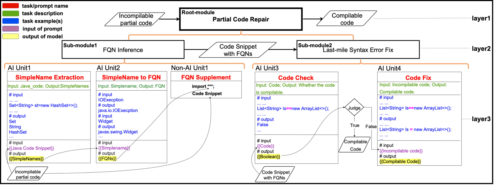
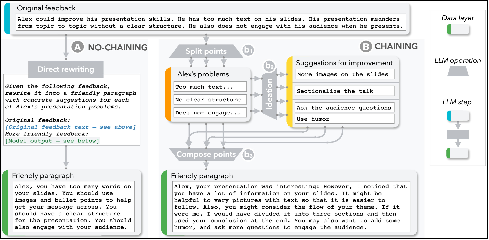
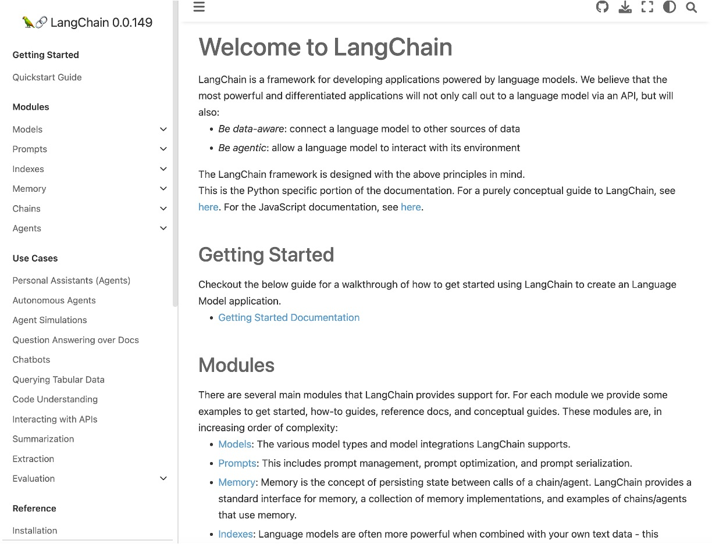

AI Chain Examples in the Literature
The concept of AI chain has been widely applied in various scenarios recently. Here, we provide several typical examples that we have learned about (please let us know if we have missed any important work). We categorize these works into three major categories: task-specific AI chains, task-agnostic agent frameworks, AI chain programming support. Our Prompt Sapper draws inspiration from these projects and tools, but it has significant differences from them in terms of balanced human-AI teamwork, low requirments for computing and programming skills, and systematic support for AI4SE4AI.
Task Specific AI Chains
Ask Me Anything: A simple strategy for prompting language models
Ask Me Anything
The research proposes a new method called "ASK ME ANYTHING (AMA)" for generating natural language prompts to train Large Language Models (LLMs) on new tasks. The approach involves producing multiple effective prompts, including question-answering formats, and using weak supervision to combine the noisy predictions. The proposed method shows an average performance lift of 10.2% over the few-shot baseline and enables GPT-J-6B model to outperform few-shot GPT3-175B on 15 of 20 popular benchmarks.
PEER: A Collaborative Language Model
PEER
The research paper introduces PEER, a collaborative language model that imitates the entire writing process, including writing drafts, proposing edits, and providing explanations. It addresses the shortcomings of existing language models in collaborative writing by enabling them to update existing texts, control text generation, and explain their actions. Multiple instances of PEER can infill various parts of the writing process, allowing self-training to increase the quality, amount, and diversity of training data. The model shows strong performance across various domains and editing tasks.
Re3: Generating Longer Stories With Recursive Reprompting and Revision
Re3
The paper proposes a Recursive Reprompting and Revision (Re3) framework for generating long-form stories. Re3 uses a general-purpose language model to create an overarching plan and generate story passages. The passages are then revised for plot coherence and premise relevance, and the best continuation is edited for factual consistency. Compared to similar-length stories generated directly from the same model, Re3's stories were judged to have a more coherent plot and to be more relevant to the initial premise by human evaluators.
Selection-Inference: Exploiting Large Language Models for Interpretable Logical Reasoning
Selection-Inference
This research evaluates the performance of large language models (LLMs) on logical reasoning tasks and proposes a Selection-Inference (SI) framework to improve their ability to solve complex problems. The framework utilizes pre-trained LLMs and alternates between selection and inference to generate a series of interpretable, causal reasoning steps. The proposed SI framework outperforms vanilla baselines and yields a performance improvement of over 100% in a 5-shot generalization setting, even outperforming a larger baseline. Additionally, the framework generates reasoning traces to improve the safety and trustworthiness of the system.
LAMBADA: Backward Chaining for Automated Reasoning in Natural Language
LAMBADA
The paper discusses automated reasoning with natural language texts by using large language models. It introduces a backward chaining algorithm, called LAMBADA, which decomposes reasoning into four sub-modules to efficiently search for proofs. LAMBADA significantly outperforms state-of-the-art forward reasoning methods on two challenging logical reasoning datasets.
ProgPrompt: Generating Situated Robot Task Plans using Large Language Models
ProgPrompt
The paper introduces a method of using large language models (LLMs) to plan robot actions for various tasks in a situated environment. By prompting the LLM with program-like specifications of available actions and objects, and with example programs, the system can generate action sequences that are functional across different environments and robot capabilities. The method achieves state-of-the-art success rates in household tasks and is demonstrated on a physical robot arm for tabletop tasks.
PCR-Chain: Partial Code Reuse Assisted by Hierarchical Chaining of Prompts on Frozen Copilot
PCR_Chain
The research paper proposes PCR-Chain, a method for reusing partial code from API documentation, technical blogs, and programming Q&A sites. PCR-Chain resolves fully qualified names and fixes syntax errors using a pre-trained code model and in-context learning. The paper outlines the underlying prompt architecture and design and demonstrates the high success rate of the method in automatically resolving FQNs and fixing syntax errors in partial code samples.
HuggingGPT: Solving AI Tasks with ChatGPT and its Friends in Hugging Face
Task Agnostic Agent Frameworks

HuggingGPT
In addition to specific tasks, AI chain is a powerful tool for multi-model, tool, and API collaboration to solve complex tasks involving multi-modal subtasks.
HuggingGPT is a typical example. It regards large language models (LLMs) as a controller to manage existing AI models in different domains and modalities to solve complicated AI tasks. As shwon in the above figure, it uses LLMs to conduct task planning, select appropriate AI models, execute subtasks, and summarize responses. HuggingGPT shows impressive results in various challenging tasks, including language, vision, speech, and other modalities, demonstrating the potential of LLMs in advancing artificial intelligence.
Technically, HuggingGPT is a task-agnostic autonomous agent framework. Many such agent frameworks have been proposed recently, such as ChatGPT Plugins, AgentGPT, Visual-ChatGPT, TaskMatrix.AI, AutoGPT, BabyAGI, autolang, CAMEL, HyperWriter AI, Codewand, which some people argue are the step towards Artificial General Intelligence (AGI). In these frameworks, the LLM runs an AI chain to understand user input, divide and conquer the task, plan task sub-steps, map task steps to appropriate models, tools and APIs, coordinate the task execution, and aggregate the results from various steps. As such, AI can deal with much more complex tasks.
AI Chain Programming Support
AI Chain Visual Programming
This paper proposes to use visual programming to chain Large Language Model (LLM) steps together as a method to enhance the effectiveness of LLMs on complex tasks, while improving transparency, controllability and sense of collaboration. The paper defines a set of LLM primitive operations and presents an interactive system where users can create and modify these chains in a modular way (such as step b1/b2/b3 in the above figure). A user study found that chaining improved task outcomes, and users developed new ways of interacting with LLMs. The paper presents three case studies to explore how LLM chains can be used travel flashcard creation, visualization code debugging, and assisted text entry. The authors have published a series of works on the AI chain benefits, challenges and tool supports (see also their papers PromptMaker and PromptChainer).
LangChain Documentation
In addition end-user oriented visual programming, several agent programming frameworks have also been proposed, such as Dust, Primer, and the most popular one, LangChain, targeting at AI engineers and software developers. These frameworks encapsulate raw LLM and data APIs into explicit high-level concepts such as chains, agents, prompts, models, indexes, and streamline the model and data interactions, thus facilitating the development of task-specific AI chains and autonomous agent frameworks.